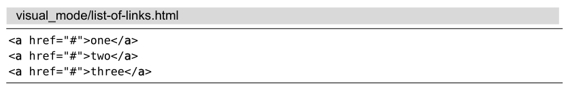
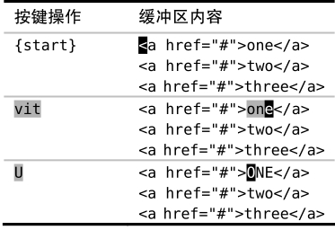
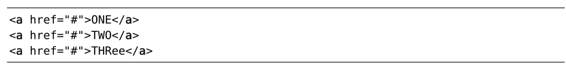
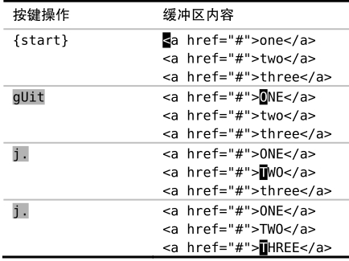

），具体操作参见表4-1。
），具体操作参见表4-1。技巧23只要可能，最好用操作符命令，而不是可视命令
可视模式可能比Vim的普通模式操作起来更自然一些，但是它有一个缺点：在这个模式下.命令有时会有一些异常的表现。我们可以用普通模式下的操作符命令来规避此缺点。
假设我们想把下面列表中的链接文字转换为大写格式：

我们可以用vit来选择标签里的内容。vit可被解读为高亮选中标签内部的内容（visually select inside the tag），其中，it命令是一种被称为文本对象（text object）的特殊动作命令，我们将在技巧51中对其进行详细的讲解。
使用可视模式下的命令
在可视模式中，我们可以选定一个选区然后对其进行操作。本例中，我们可以使用U命令来把所选中的字符转换为大写（参见:h v_U），具体操作参见表4-1。
在转换完第一行后，现在我们想对接下来的两行进行同样的修改。用点范式试一下吧，怎么样？
表4-1用可视模式下的命令进行大写转换

好，我们执行一下j.命令，把光标移到下一行并重复上次的修改。此命令在第二行工作得很好，但如果我们再执行一次，最终就会得到这个看起来有点古怪的结果：

你看到发生什么了吗？当一条可视模式命令被重复执行时，它会影响相同数量的文本（参见:h visual-repeat:h aw）。在本例中，最初的命令影响了一个由3个字母组成的单词。在第二行它依旧工作得很好，因为该行恰好也包含一个由3个字母组成的单词。但是，当我们想对一个由5个字母组成的单词重复此命令时，它只成功转换了其中的前3个字母，留下2个字母未被转换。
使用普通模式下的操作符命令
可视模式下的U命令有一个等效的普通模式命令：gU{motion}（参见:h gU）。如果我们用此命令做第一处修改，就可以用点范式完成后续的修改，如表4-2所示。
表4-2用普通模式下的操作符命令进行大写转换

结论
这两种方式都只需要4次按键操作：vitU及gUit，但其背后的含义却大相径庭。在可视模式所采用的方式里，这4次按键可以被当做两个独立的命令。vit用来选中选区，而U用来对选区进行转换。与之相反的是，gUit命令可以被当成一个单独的命令，它由一个操作符（gU）和一个动作命令（it）组成。
如果我们想使点命令能够重复某些有用的工作，那么最好要远离可视模式。作为一般的原则，在做一系列可重复的修改时，最好首选操作符命令，而不是其对应的可视模式命令。
这并不是说可视模式出局了，它仍然占有一席之地。因为并非每个编辑任务都需要重复执行，对一次性的修改任务来说，可视模式完全够用。并且，尽管Vim的动作命令允许我们进行精确的移动，不过有时要修改的文本范围的结构很难用动作命令表达出来，而处理这种情形却恰恰是可视模式所擅长的。